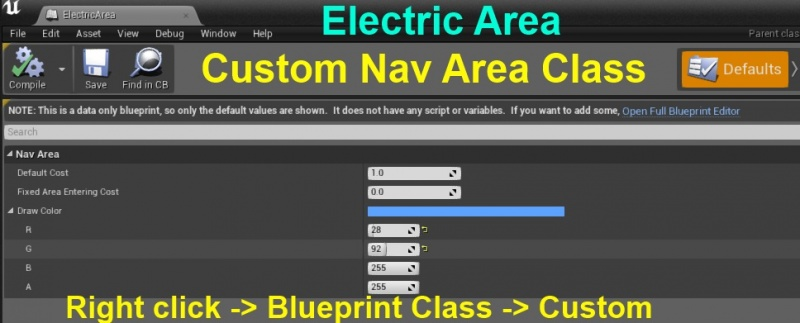
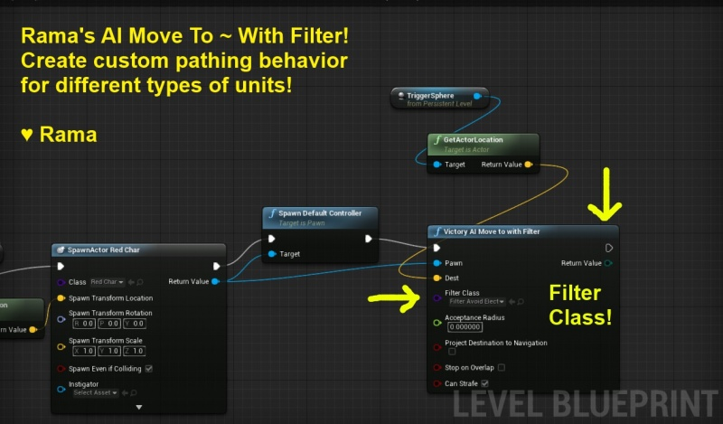

AI Custom Pathing, How To Use Nav Modifiers Query Filters
Contents
- 1 Overview
- 2 Nav Area Class
- 3 Nav Modifier Volume
- 4 Navigation Query Filters
- 5 Use Case: Electric Currents and 2 Types of Characters
- 6 Custom BP Node
- 7 Changes Nav Behavior Filters ~ Per Move ~ If You Want To!
- 8 Project Download Link
- 9 Victory Plugin, 100+ Custom BP Nodes For You!
- 10 Don't Entirely Exclude Areas, But Have AI Prefer Certain Paths
- 11 Conclusion
Overview
Author: ( )
Dear Community,
I've created a video and a sample BP-Only project (+ my Victory Plugin) that shows you how to use Nav Modifier Volumes and Navigation Query Filters to create custom pathing for your units!
Video
<youtube> https://www.youtube.com/watch?v=xwdVQQtQa8s
A Nav Area Class is created like any custom Blueprint class, and you can specify a custom color as well as custom navigation costs for the area.

A Nav Modifier Volume uses a custom Nav Area Class to specify certain areas of the UE4 Nav Mesh to take on the attributes of your custom Nav Area class.
So using a Nav Modifier Volume, you can tell AI units to completely ignore certain sections of the nav mesh, or prefer those areas while still using other routes if they are shorter.
Using custom nav area costs you can really fine tune the behavior of different AI units!
A Navigation Query Filter is used by the AI unit and also my Victory BP Node to tell the unit to have a certain relationship to different Nav Area Classes.
You can create 1 filter that tells a unit to avoid Nav Area Red, while telling another unit to specifcy prefer travelling in Nav Area Red.
A Navigation Filter lets you override the costs associated with each Nav Area class, so you can tell 1 unit to absolutely prefer a Blue Nav Area, while telling another unit to avoid Blue as much as possible.
See my video above for an example usage!
Use Case: Electric Currents and 2 Types of Characters
In my example, I have two types of units.
The blue unit is immune to electricity, and does not need to path around electric currents.
The red unit bids us all a fond farewell if it passes thruogh an electric current.
So in this case I can't just block of areas that have electric currents completely from the nav mesh, or else the blue unit cannot pass through freely as it should be able to, taking a shortcut as a result.
This is a case where Nav Modifiers and Query Filters really shine!
I only want to filter out certain sections of the nav mesh for the red unit, while still allowing the blue unit to pass through those areas freely.
Custom BP Node
In order to actually be able to use query filters and nav modifiers in a BP only project effectively, I made a custom BP node, AI Move To With Filter.
This node allows me to tell the unit to move to a certain location, while using a query filter, only in Blueprints!

Using my Victory BP Library node, you can actually have a unit changes its navigation filter per move if you want to!
This enables you to have the AI respond to dynamic level conditions (like if the electricity in my example gets turned off), or if you just want the AI to confuse the player by randomly switching its pathing preferences!
Project Download Link
I'm giving you the entire project as shown in the video above, so you can poke around in hands-on fashion!
UE4 Forum Link ~ Visit my UE4 Community Content Thread for full download details and updates
Victory Plugin, 100+ Custom BP Nodes For You!
If you're not familiar with all the complimentary custom nodes I am offering to you such as drawing vertices of static and skeletal meshes, tons of extra math and geometry analysis nodes, and randomization features, check out my Victory BP Library Plugin!
UE4 Forum Link ~ Victory BP Library ~ Extra BP Nodes For you!
Don't Entirely Exclude Areas, But Have AI Prefer Certain Paths
If you dont want to entirely exclude areas for an AI unit, but really want them to prefer or avoid a certain section of the nav mesh, you can create Nav Areas with custom costs!
Then you can use filters to override those costs for different types of units!
So please note that you dont have to always go all or nothing in terms of nav modifiers, they can simply dissuade or encourage an AI unit with a particular filter. This allows you to create really dynamic AI pathing quite easily, and with the help of my Victory BP Library node you can change filters per move if you want to!
Conclusion
Now you know how you can create custom pathing behaviors for specific types of units, while not having to reshape/obstruct the entire nav mesh!
Now some units can go where others cant, or prefer certain paths!
I hope you enjoy my sample project and video!
Enjoy!
( )